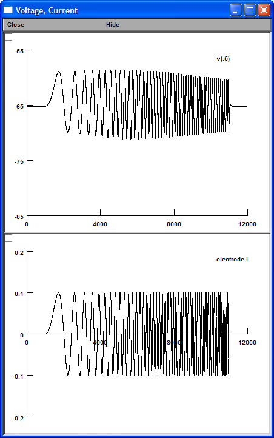
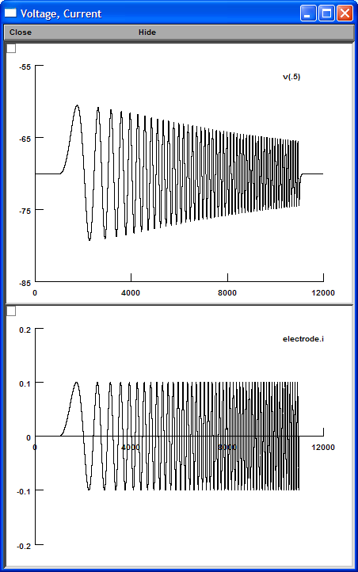
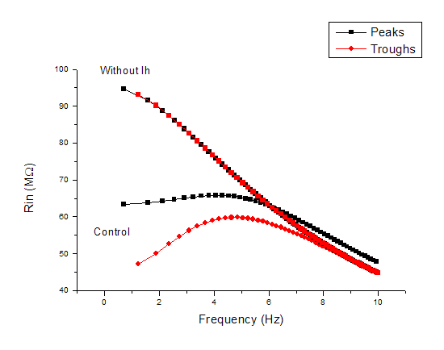
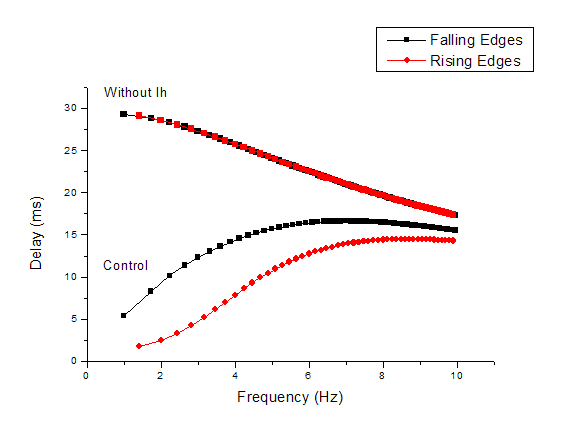

|
Membrane potential in response to chirp current injection. Control Depolarizing resonance frequency = 4.06 Hz Hyperpolarizing resonance frequency = 4.85 Hz  |
Membrane potential in response to chirp current injection. Without Ih Depolarizing resonance frequency = 0.71 Hz Hyperpolarizing resonance frequency = 1.22 Hz  |
|
Impedance Amplitude  |
Voltage Delay  |